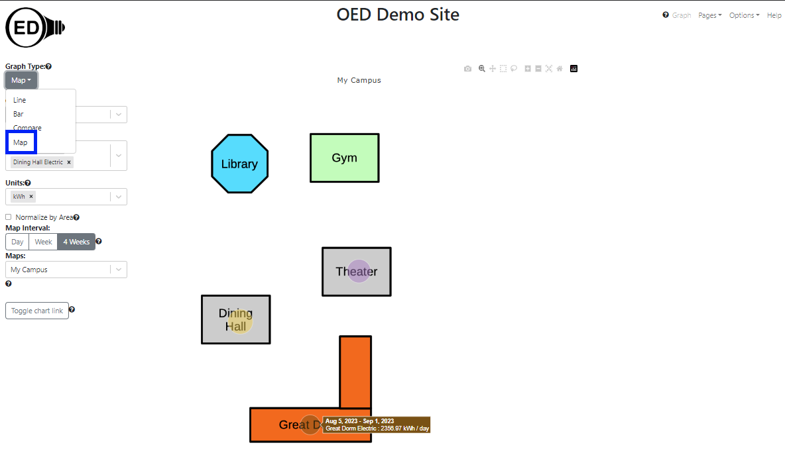
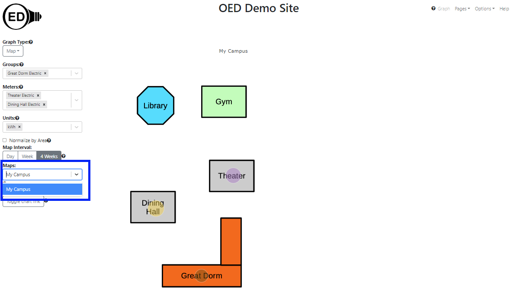
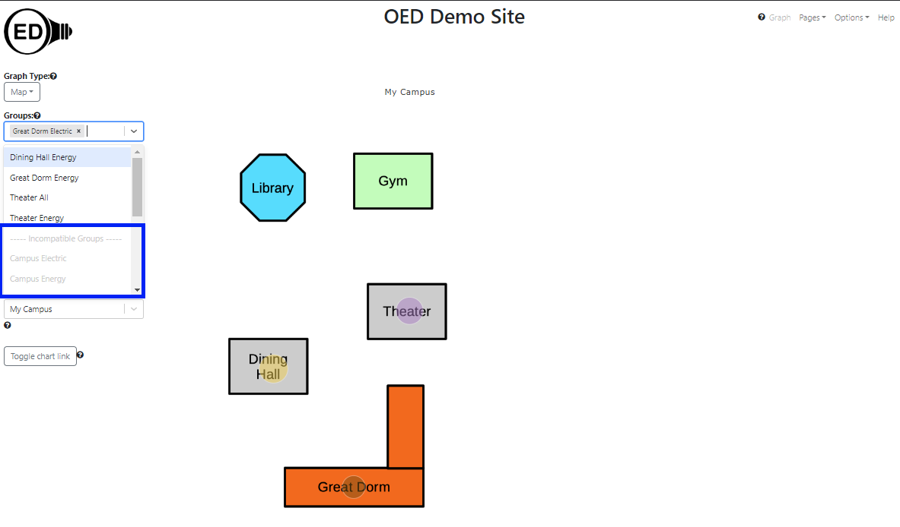
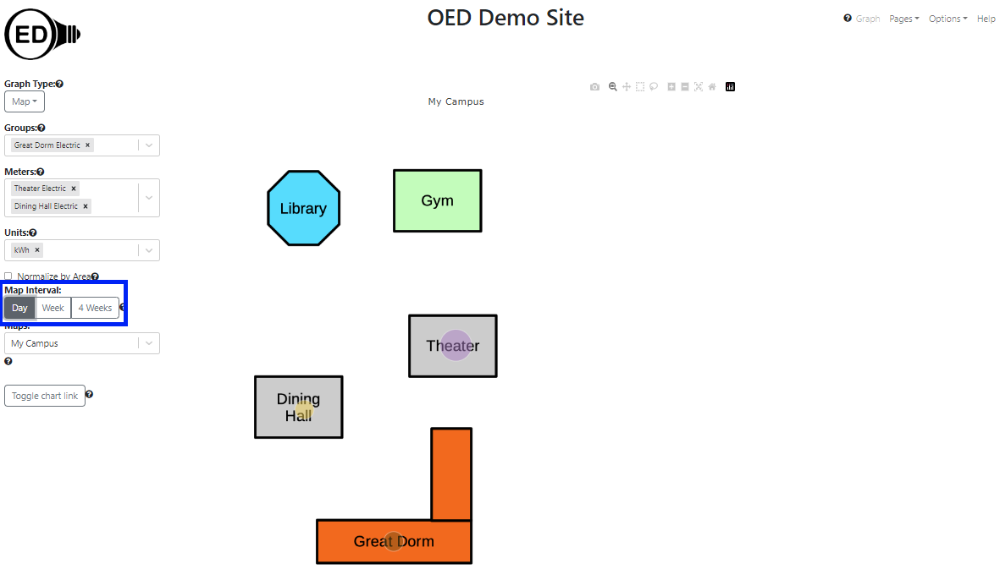

OED Documentation
Map Graphic
Version V1.0.0
Documentation overview
User documentation
Information
Graphing
Meters/Groups
Other Features
Admin documentation
Documentation versions for this page
Overview
The map graphic gives a spatial representation of energy usage. Typically a simplified map of buildings and any important landmarks is used as the image for a map. A circle is placed on the map for each graphed item where the size of the circle represents its usage. An OED site can have as many maps as it wishes. To get this graphic, one clicks the "Map" choice (highlighted with a blue box in the next figure). This is a simple map with a few buildings where the electric usage is given for "Dining Hall" ("Dining Hall Electric" meter), "Great Dorm" ("Great Dorm Electric" group) and "Theater" ("Theater Electric" meter). (information on example data) Note that there are hover items as with other graphics where on a map this shows the time range, the meter/group name and its usage. As the size of the circles show, the "Dining Hall" and "Theater" used similar amounts of energy and the "Library" used less. 
Usage
One the map page, one can select the map one wants to use. One does this by clicking the dropdown menu for "Maps" and clicking the one wanted (highlighted with a blue box in the next figure). This is very similar to what one does for a "Meter:" or "Group:". Note that if there is only one map then OED will automatically select it. Once a map is selected, it will appear in the graphic. If one already has meters/groups selected that can be shown on the map then they will immediately appear. (See below for more on selecting meters/groups.) 
One selects the meters or groups to graph in the usual way. OED will display each meter/group as an individual circle as shown in the figure above. One can select the units, area normalization and chart link as usual. In some cases the meter/group cannot be placed on the map. This happens when its GPS coordinates do not lie within the map. Note that a meter/group without GPS coordinates provided by the site can never be placed on any map. There is a separation label of "-----Incompatible Meters-----" or "-----Incompatible Groups-----" and these meters/groups are shown grayed out so they cannot be selected. Meters/groups can be placed in this section of the dropdown menu for other reasons such as incompatible units but that is not different than other graphics. In the following figure, "Campus Electric" and "Campus Energy" are at the start of the incompatible groups (highlighted with blue box) since they cannot be shown on the map. Additional groups could be seen by scrolling farther down this list. 
The circle represents the average daily usage over the time range chosen in the "Map Interval". The allowed time ranges are "Day", "Week" and "4 Weeks" and highlighted in blue in the next figure. In this figure, the "Day" choice was selected and note that the circle sizes differ from the first figure since the relative usage is different for one day than 4 weeks. These time ranges are the same selections as on a bar graph. A selection on either the bar or map page impacts the other graphic. Note that there is no slider on the map page (this should change in the future), however, changes to the slider on the bar graphic page does change the time range on the map graphic. The value shown on the map is the same as on the last bar shown in the bar graphic except divided by the number of days for the time range. As with bar graphics, the range of dates correspond to the ones chosen and shown on the line graphic. Note that the time range is considered the full time (not just the zoomed in time) so you will see that unless one redraws to reduce the time range. 
If a site has multiple maps that lie in different geographical locations, then a meter/group grayed out on one map might be displayable on another. Also, if one is on a different graphic type and are displaying a meter/group that cannot be shown on the map then it will not appear on the map and be grayed out on the "Meters"/"Groups" list. If one returns to another graphic, the meter/group will appear again since it can be shown.
Details
Map circle colors
OED consistently uses the same color for a meter/group across all graphic representations (except compare). The map graph may seem to have a lighter shade of color than the other graphics. This is due to making the circle partly transparent so one can see the underlying map image. If one looks at the color of the rectangle that pops up when one hovers over a map circle, one will see it is the same as the color used for this item in other graphics.
Map circle size
The size of a circle is based on its area (not the diameter) so the circle area scales with usage. This was chosen since a study indicated that area is the better choice for user perception.
OED makes the circle size be from an internally set minimum and maximum size so that it ranges within a set percentage of the map size. Note this has a couple of important implications:
- The size of circles can change as one selects new items to place on the map. This only happens if a new item has greater usage than any previously chosen item. This occurs because OED makes the item with the highest usage have the maximum size allowed and scales all the other items appropriately. This allows circles to be as large as possible.
- The minimum size of the circle means that items with low usage do not become so small that they cannot be seen. However, it does mean that items with small circle area will not accurately represent the actual usage. Hovering over a circle will cause a popup that displays the actual usage.
Format of dates and times
See explanation in line graphics for why data and time format varies with displayed language.